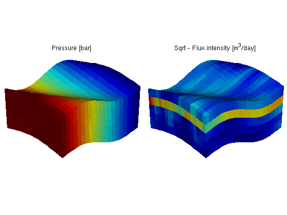

Pressure Solver: Simple Corner-Point Grid with Linear Pressure Drop
Herein we will solve the single-phase pressure equation
for a simple corner-point grid model with isotropic, lognormal permeability.
The purpose of this example is to demonstrate the mimetic pressure solver applied to a case with corner-point grids given as from an input stream in the industry-standard Eclipse™ format.
More details of how to read, process, and manipulate corner-point data are given in a separate example.
Contents
Generate the corner-point grid
The corner-point grid is generated using a standard MATLAB® meshgrid which is then transformed to make sloping pillars and wavy layers. The corner-point grid is represented as a GRDECL structure, which is the same structure as is returned from readGRDECL. If an extra parameter is passed to the simpleGrdecl function, it adds a fault to the model. This behavior is used in one of the multiscale examples.
nc = [20, 20, 5];
grdecl = simpleGrdecl(nc); % No fault in model
Then we process the GRDECL structure and build up an unstructured grid.
G = processGRDECL(grdecl); clear grdecl
After the grid structure is generated, we plot the geometry.
clf, plotGrid(G); title('Corner-point grid') view(3), camproj perspective, axis tight, camlight headlight
Compute geometry information
Having set up the basic structure, we continue to compute centroids and volumes of the cells and centroids, normals, and areas for the faces.
G = computeGeometry(G, 'Verbose', true);
Computing normals, areas, and centroids... Elapsed time is 0.005153 seconds. Computing cell volumes and centroids... Elapsed time is 0.161284 seconds.
Make rock and fluid data
We generate a lognormal and layered permeability and specify that we are working with a single-phase fluid; type "help initSingleFluid" to see default values for density and viscosity. Our flow solver is constructed for a general incompressible flow and thus requires the evaluation of a total mobility function, which in our case equals one in the whole domain.
rock.perm = convertFrom(logNormLayers(nc, [100, 400, 50]), milli*darcy()); fluid = initSingleFluid('mu' , 1*centi*poise , ... 'rho', 1014*kilogram/meter^3);
Plot the logarithm of the layered permeability.
cla, plotCellData(G, log10(rock.perm(:))); title('Log_{10} of permeability') camproj perspective, axis tight off, camlight headlight
Add boundary conditions
Pressure is set of one bar on the west-side boundary and zero on the east-side boundary. No-flow conditions are imposed automatically at all other (outer) boundaries.
westFaces = find(G.faces.centroids(:,1) == 0); bc = addBC([], westFaces, 'pressure', ... repmat(1*barsa(), [numel(westFaces), 1])); xMax = max(G.faces.centroids(:,1)); eastFaces = find(G.faces.centroids(:,1) == xMax); bc = addBC(bc, eastFaces, 'pressure', ... repmat(0, [numel(eastFaces), 1]));
Then we plot the grid, coloring the faces on which we have imposed boundary conditions.
cla, plotGrid(G, 'FaceColor', 'none'); plotFaces(G, westFaces, 'r'); plotFaces(G, eastFaces, 'b'); title('Boundary conditions') camproj perspective, axis tight off, camlight headlight
Assemble and solve system
Finally, we assemble the mimetic system in hybrid form and solve the corresponding linear equations.
rSol = initResSol(G, 0); S = computeMimeticIP(G, rock, 'Verbose', true); rSol = solveIncompFlow(rSol, G, S, fluid, 'MatrixOutput', true, 'bc', bc);
Using inner product: 'ip_simple'. Computing cell inner products ... Elapsed time is 0.199021 seconds. Assembling global inner product matrix ... Elapsed time is 0.001772 seconds.
We plot the results: cell pressure is converted to unit 'bar' and fluxes to unit m^3/day when plotting results.
subplot('Position',[0.01 0.25 0.48 0.5]), plotCellData(G, convertTo(rSol.pressure(1:G.cells.num), barsa())); title('Pressure [bar]') view(3), camproj perspective, axis tight off, camlight headlight subplot('Position',[0.51 0.25 0.48 0.5]), cellNo = rldecode(1:G.cells.num, diff(G.cells.facePos), 2) .'; plotCellData(G, sqrt(accumarray(cellNo, ... abs(convertTo(faceFlux2cellFlux(G, rSol.flux), meter^3/day))))); title('Sqrt - Flux intensity [m^3/day]') view(3), camproj perspective, axis tight off, camlight headlight